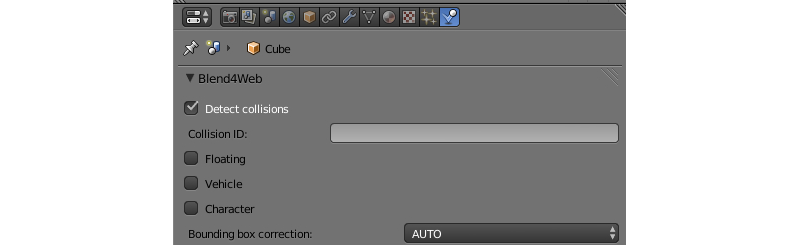

Physics¶
Preparing for Use¶
To enable physics on the scene use the Enable physics checkbox under the scene tab in Blender.

Physical parameters can be set up in the Blender Game mode.
{kind=link}
Static Physics Type¶
Can be used to limit the movement of other objects, for example to detect collisions with a landscape, walls and so on. In the physics settings of such an object the Static value (set by default) should be selected for the Physics Type option.

One or multiple physics materials can be assigned to a mesh. Under the Material tab the Special: Collision checkbox must be enabled. The material physics settings are also located on the Physics panel under the Material tab (in the Blender Game mode). The following material physics settings are supported: Friction, Elasticity.

The Collision ID field is intended for detecting collisions with specific materials and can be left empty. An example of Collision ID usage is detecting the landscape surface a character is located on - grass, sand, wooden coating and so on.
The Ghost option excludes the material from physical interactions but still notifies the application about the contact with it. An example - detecting that the character is located on a vertical ladder.

The Collision group field corresponds to the physics group which the material belongs to. The Collision mask field defines all physics groups with which this material will interact.
Dynamic Physics Type¶
Intended for rigid body movement simulation.

In the physics settings of such an object the Rigid Body (with rotations) or Dynamic (without rotations) values can be selected for the Physics Type option. In the Collision Bounds settings the collider type can be selected - the supported types are: Box, Capsule, Sphere, Cylinder, Cone. Other supported settings are: Mass, Damping - for Translation and Rotation.
The Collision group field corresponds to the physics group which the object belongs to.
The Collision mask field defines all physics groups with which this object will interact.

The Detect collisions checkbox must be enabled under the object’s physics tab. The Collision ID field is intended for detecting collisions with a specific object (for example for detecting proximity of a FPS character to different items) and can be left empty.
{kind=link}
Friction and Elasticity are supported for the material of such an object. When multiple materials are used on a single mesh, the physics parameters are taken from the first of them.
For the camera object the Physics Type = Dynamic parameter must be used, and the Detect collisions checkbox must be enabled.
Constraints¶
Physical constraints are used for limiting the objects’ degrees of freedom.

Adding a physical constraint (Rigid Body Joint) to the object can be performed on the Object Constraints panel. The supported types (Pivot Type) are: Ball, Hinge, Cone Twist, Generic 6 DoF. A physical constraint can be added to one of the two interacting objects, while the other object acts as a Target. Both objects can have a static and/or dynamic physics type. In constraints (except Ball) the translation and rotation limits can be set up.

Wheeled Vehicles¶
The model of a vehicle must consist of 6 separate objects - a chassis, 4 wheels and a steering wheel. The chassis’ mesh center should correspond to the mass center. The centers of the wheels’ and the steering wheel’s meshes should be located on the rotation axes. The steering wheel should be oriented in the local space of coordinates - X - the rotation axis, Y - to the right and Z - upwards. The object can have any names.

For all 6 objects: select the Vehicle part, specify the same id in the Vehicle name field, select the right object type - Chassis, Steering wheel, Back right wheel and so on. A Suspension rest length setting is also available for the wheels.
It is neccessary to specify a realistic mass for the chassis (because the default value is only 1 kg). To do this go to the physics settings, choose the Rigid Body value for the Physics Type option and specify the required value (for example, 1000 kg) in the Mass field.
Chassis settings parameters¶
- Vehicle Settings > Force max
Maximum driving force of the vehicle
- Vehicle Settings > Brake max
Maximum braking coefficient
- Vehicle Settings > Suspension compression
Damping coefficient for suspension stretching
- Vehicle Settings > Suspension stiffness
Suspension stiffness coefficient
- Vehicle Settings > Suspension damping
Suspension damping coefficient
- Vehicle Settings > Wheel friction
Friction constant between the wheels and the surface. It should be around 0.8 for realistic vehicles. But it can be increased significantly to achieve a better control (1000 and more).
- Vehicle Settings > Roll influence
Decreases the wheels’ torque decreasing the probability of the vehicle overturning (0 - no torque, 1 - real physics behavior).
- Vehicle Settings > Max suspension travel cm
Maximum suspension travel in centimeters.
For the Steering wheel it is necessary to specify the maximum steering angle (Steering max) and the ratio between the turn of the steering wheel and the turn of the wheels (Steering ratio). The maximum steering angle value is specified in revolutions. A single revolution equals to 360 degrees. Therefore if Steering max is equal to one and Steering ratio is equal to 10, the maximum turn of the steering wheel will be 360 degrees and the maximum turn of the front wheels will be 36 degrees.
On this stage you can export and load the scene into the engine. We recommend to create a road surface with a physics material. To choose the controlled object press the Q key in the Viewer and select the chassis. Use the W, A, S, D keys as controls.
We can additionally tweak the Damping of Translation and Rotation. This will influence the speed and inertion of the vehicle.
The friction and elasticity of the road surface material do not influence the vehicle’s behavior.
Floating Objects¶

In order for the object to float on the water surface (an object with the Special water material), it is neccessary to enable the Floating checkbox. There are two types of floating objects: Main body - the floating object itself and Bob - an auxiallary bob-object onto which the buoyancy will be acting. A floating object can have an unlimited number of Bob objects. This can be both meshes or Empty objects.
All objects that are part of the same floating object must have the same name in the Floater name field.
Floating object settings¶
- Floating settings > Floating factor
Buoyancy coefficient
- Floating settings > Water linear damping
Linear velocity damping when the object is on the water surface (or under water). When the object is not in water the physics settings are used.
- Floating settings > Water rotation damping
Rotation damping when the object is on the water surface (or under water). When the object is not in water the physics settings are used.
Floating Vehicles aka Watercrafts¶

Watercrafts use some parameters from the Vehicle settings and all the settings which are similar to Floating settings. It is neccessary to set the Vehicle part type Hull on the main object. Similar to a floating object a watercraft requires auxillary Bob objects.
Watercraft settings¶
- Vehicle Settings > Force max
Maximum driving force of the vehicle
- Vehicle Settings > Brake max
Maximum braking coefficient
- Floating settings > Floating factor
Buoyancy coefficient
- Floating settings > Water linear damping
Linear velocity damping when the object is on the water surface (or under water). When the object is not in water the physics settings are used.
- Floating settings > Water rotation damping
Rotation damping when the object is on the water surface (or under water). When the object is not in water the physics settings are used.
Using in applications¶
The physics system is implemented in the uranium.js module and loaded separately from the engine’s main code. The uranium.js module itself is a modification of the Bullet physics engine, which is ported to work in browsers. To enable physics system just place the module uranium.js in the same directory as the source code of your application.
Another method is to explicitly specify the uranium.js module’s loading path, using the following API:
b4w.config.set("physics_uranium_path", ".../uranium.js");
If physics is not required, it’s adviced to disable the loading of uranium.js module before the engine’s initialization by using the method set from config.js module:
b4w.config.set("physics_enabled", false);